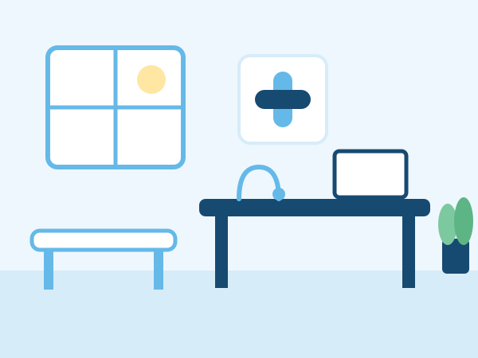

Tomá agua durante el día
Mantenerse hidratado ayuda al cuerpo a funcionar bien, sobre todo en días de calor.
Consultorios médicos con profesionales de distintas especialidades, en el corazón de Temperley.
14 de Julio 40, Temperley
Sacar turno por WhatsApp
Elegí la especialidad que necesitás y consultá los días de atención.
Cargando profesionales…
| Lunes a viernes | 8 a 20 h |
| Sábados | 8 a 13 h |
| Domingos y feriados | Cerrado |
Consultá por tu obra social o prepaga. Escribinos por WhatsApp y te respondemos.
Consultar por WhatsAppMantenerse hidratado ayuda al cuerpo a funcionar bien, sobre todo en días de calor.
Caminar, aunque sea un rato, es una buena forma de mantenerse activo. Consultá con tu médico qué actividad es la adecuada para vos.
Visitar al médico aunque te sientas bien permite cuidar tu salud a tiempo.
Esta información es general y no reemplaza la consulta médica.
Dejanos tu nombre, teléfono y mail, y te mandamos consejos de salud y novedades del consultorio.
Quiero suscribirmeUsamos tus datos solo para enviarte consejos y novedades. No compartimos tu información y podés darte de baja cuando quieras.